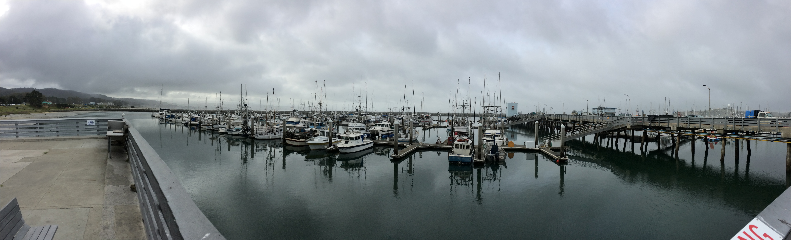
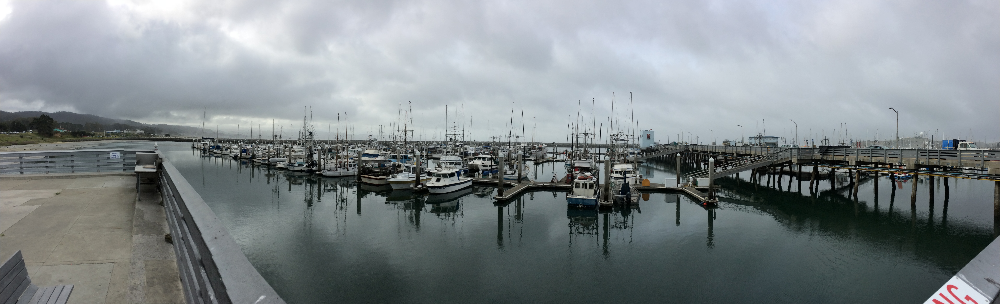

Blog

Memorial Day
- May 27, 2014
Memorial Day is, as almost all holidays have become, a day of gathering for barbeques and enjoying the company of your close ones. We should always remember, though, that for too many of the wives, husbands, and children today simply isn't a day of celebration, but a day for remembrance of those who made a conscious decision to put their lives at risk for the greater good. Put aside for a moment all of the political reasons and ramifications of why our servicemen and women are overseas. I was in the Marines, and I can tell you we don't care about any of that. What we care about is fighting for that guy next to us. I can tell you I would have gladly taken a bullet for any one of my platoon mates and they'll say the same. At the same time, I didn't set out to browbeat anyone when I decided on the topic. After all, all those who gave their lives serving the country did so believing that they are making a difference for those loved ones that he or she left behind at home. So on this day let's not be afraid to live our lives to its fullest. Enjoy and play hard and also work hard. Let's return the favor. Let's make an imprint on this world during the short time we are here. Who knows? Maybe one day we can make someone's day just a little bit brighter.


HTML5 Developers Conference
- May 23, 2014
At the crack of dawn we boarded the BART headed for San Francisco. Every one of my
cohorts were tired from lack of sleep but I think we all shared the same sentiment. We were
all very excited to be able to attend our very first HTML5 Developers Conference.
When we arrived as volunteers, we were each given small tasks to perform: Bill,
Jose and Taylor directed traffic, Peter and I scanned people in as they entered the lobby.
To check people in, we were asked to download an app that enabled us to either use our
phones' camera to scan the QR code on the attendee's tickets or look him/her up by their
names. Cool, but pretty tame stuff, I thought. After all,
this WAS the conference for all things web and apps. IN SAN FRANCISCO. As it turns out,
perhaps due to past experiences, I had more than a few people who seemed very impressed by
the app which I found to be both confusing and amusing.
After about a couple hours of checking people in furiously, we were cut loose! Our HTML5
conference was about to begin!! First thing we did was scan the big board of presentations to
see which ones we wanted to attend. The topics ran the gamut from browser security to online
gaming.
The first and, in my opinion, the best part of the day was the very first presentation of the
day: Famo.us. Famo.us is a developer's tool to build the most beautiful web apps using a
physics engine rather than relying on CSS alone. It is written entirely in JavaScript
(JavaScript FTW!), and had just been released to the public just three days ago. The
presentation showcased the physics engine and it was by far the most exciting and beautiful
things I had seen in a while. I came out of it inspired that this has to be something that I
have to include in my repertoire.
After lunch, we had decided that it would be a good idea to go down to where the vendors were
to checkout the swag. What was intended to be a goodies hunt, turned out to be the most
exciting part of the day. The booths were occupied by both tech industry giants like IBM, GE,
and Sony and startups like Ludei, and CouchBase. The most exciting part was that out 20 or so
companies being represented there, all but a couple were all looking for developers! In fact,
IBM had 1000 positions that needed to be filled. That was NOT a typo. 1000 jobs! Not company
wide, not including all the various departments. Just 1000 developers. It's one thing to hear
from people who are "in the know" about the job market. It's quite another to actually hear
it from the companies themselves. Suffices to say that it was a well-needed confirmation that
I'm doing the right thing. What a way to wrap up an amazing day.
How to set up a MEAN stack project
- May 20, 2014
On my last post, I very briefly went over my experiences with the MEAN stack and a little
bit of the why it was gaining popularity. Today I decided to take the more practical route
to show how to set up a MEAN stack project from the ground up. As you will see,
most of the work has been done already and all you have to do is to enter just a couple of
command line prompts. The process is relatively painless and I will take you through the
steps here.
The very first step is going to be installing Node. You can do this by going to the NodeJS website and hitting install. Pretty simple, right?
Once that's installed, the next thing you are going to do is open up your terminal and type:
npm install -g yo
If you get an "EACCESS" error, that just means you have to type in 'sudo' in front of npm and
then type in your machine's password to gain access. Keep in mind, in the terminal, you won't
see anything happen when you type your password. It threw me off in the beginning, too. You
definitely are not alone. What that last command did was install a scaffolding tool called Yeoman that does all of the heavy lifting for you.
Once that's done installing, and you will know when it's done when your command prompt comes
back, you will install the scaffolding of your app by typing in the command prompt:
npm install -g generator-meanstack
See how simple that is? Yeoman will now install and organize all the necessary files for you
and the only thing left to do is just type:
yo meanstack
to create your very own web app using the MEAN stack. To launch your new app in your local
browser, type:
grunt
in to the terminal and go to localhost:3000 to check out the app! There you have it! If you
followed along, this
probably was the easiest thing you did all day. Now fill it in with some content and enjoy!

My experiences with Node.js
- May 17, 2014
For about the past week and a half, we have been learning the MEAN stack,
so I'm going to discuss a little bit about my experiences dealing with just one small,
but pretty major part of the MEAN stack that is NodeJS.
First off, for those who don't know what the MEAN stack is, it is an abbreviation describing
the four technologies that make up the "stack" or a structure of programming languages. It
consists of:
MongoDB - A NoSQL database that uses JSON documents to represent data
Express.js - node.js web application framework
Angular.js - front-end web application framework
Node.js - event-driven server-side Javascript environment that runs on Google's V8 engine.
Now, if you haven't noticed already, it's pretty clear why the MEAN stack is gaining
popularity among developers. The entire stack is written in Javascript. This means that
everything is lightening fast since none of the effort goes into translating between
different languages. Another main reason is that the heart of the stack, Node.js, working in
tandem with Express.js, is very lightweight and fast. It uses callback functions to listen
within an event loop for a request to come in, all the while executing other commands.
It isn't without it's shortcomings, however. Well, it isn't so much the issue with the
language, as much as it is about lack of relevant documentation and usage. After all, node.js
hasn't even hit version 1.0 yet. Trying to learn the most cutting edge technology does have
its drawbacks by virtue of it being so new and shiny. When it works, it is a thing of beauty.
But, when it decides it no longer wants to play nice with you, don't be surprised if you have
a hard time finding an answer for it.
But this shouldn't discourage anyone from trying to learn it. Just look at it this way, the
sooner you start learning and figuring out how node.js works, the better you will be
prepared. Ruby on Rails may be the darling right now, but the newborn node.js is growing up
fast and already vying for its share of the attention. Don't say I didn't warn you.

Motivation
- May 14, 2014
"Decide in your heart of hearts what really excites and challenges you and start moving your life
in that direction. Every decision you make from what you eat to what you do with your time
tonight turns you into who you are tomorrow and the day after that. Look at who you want to be
and start sculpting yourself into that person. You may not get exactly where you thought you'd
be, but you will be doing things that suit you in a profession you believe in. Don't let life
randomly kick you into the adult you don't want to become." - Col. Chris Hadfield Cmdr. Exp. 35 ISS
I guess it would be hard for me to complain about the opportunity I've been given by being
here at Coding House. And this definitely isn't one. What I do want to talk about tonight,
though, is motivation.
It has always been a weakness of mine (yes, I am fully aware that this blog post is gonna be
out there for my potential employers to see) to be motivated. Like so many others, in the
beginning when one is full of hope and dreams, I am excited and rearing to go. But it seems
for me I lose the momentum somewhere along the way. So I end up looking for additional
motivators. I look at some of my friends who don't seem to have the same problem and feel
like I'm missing something. But maybe, just maybe, there isn't.
Everyone goes through the same things in life. Everyone has their struggles and tribulations.
I know there are people out there just like me. So this post is for all of you out there.
1. Self-doubt is natural, but don't let it overwhelm you. Everyone has weaknesses but don't
let your weakness define you. Successful people don't dwell in the past. They only think
about the present and the near future because as much as we would all want to change the
past, no one has that ability. So why bother?
2. One thing I definitely need improvement on is asking questions. No one has all the
answers, and neither do you. Asking questions doesn't mean you are stupid, it just means that
you don't have the answers but you are in search of more knowledge.
3. For the love of god, stop comparing yourself with others. It is quite possibly the most
asinine and least efficient thing you can possibly do. There will always be people better
than you at any given thing at any given moment.
So I don't know if you have already noticed or not, but this post was just as much for me as
it was for whomever out there who needs it. This started from the quote I read that is now the
header of my post. Writing about this definitely is something you can try yourself. I know it
has helped me greatly. Now it's time to get back to work!!
 

It's already been one month?!
- May 5, 2014
Wow it has been too long since I've visited my blog. It is definitely a weird feeling
looking back only three weeks ago, the first week seemed like an eternity. Now I am
overwhelmed by the breakneck speed at which the minutes seem to be flying.
Yesterday,
the entire Coding House family went out to Half Moon Bay about an hour's worth of drive
west from Fremont. In a month's time, all of us have become such close members of what I'll
call a very diverse family. Taylor from Shelton, Washington is adjusting quite well to the
fact that he is a minority for the first time in his life. The non-caucasian caucus, which
consist of three Asians and Jose(who I have no clue on whom he identifies himself with), tend
to pick on him a little bit due to the fact he is white and is from a small town that no one
has heard of. But then again, with five guys living in a house, no one is safe. Jose from
Lubbock, Texas, is slowly coming out of his shell. I think he's closest to the way I am around a
new group of people. He is turning out to be quite a comedian. Bill and Peter have quickly
become the front runners in the class. They seem to be grasping the subject matter faster
than the rest of us. I wish I could be that way but it seems I am a little bit slow on the
uptake. I just need to work a little bit harder, but I can't help but feel that I don't
know much, but I've always had a very high threshold for my comfort level. But,
I digress. Sunday Fun day was such a blast. It was my very first time on a paddle board and
I was very shaky to say the least(my aquaphobia didn't help) but I survived which didn't
involve staying dry and dare I say, had quite a bit of fun.
After a grabbing a quick lunch
at Nick's favorite sandwich shop, we took the scenic route winding through the woods. Of course,
Nick had the bright idea of recording yet again of our interpretation of Hall and Oates'
You Make My Dreams, acapella no less because we didn't have any cell signal. With each day
that passes by, one thing is becoming very clear - the lesson we are learning isn't just
about how to make a webpage work, but it is learning to overcome those things that which
make us uncomfortable. The biggest one of them all for me is going to be being comfortable
with the fact that I will be putting myself and my body of work out there to be judged while
not being as perfect as I would like to be. This will, by far,
be the biggest hurdle I will have to overcome in order to, in the words of Darryl Hall,
"make my dream come true."
It's only been one week?!
- April 13, 2014
My first week at Coding House is coming to an end, and it's definitely been a shock to the system. Very similar to the way I felt when I first entered boot camp. The overwhelming feeling of being out of place that filled my mind didn’t really leave much room for anything else. But as the days passed, seeing the familiar faces day after day started to put my mind at ease. Being part of such small (and which I am sure also will soon be a tight-knit) group, it was daunting for me to let my guard down. Soon I realized, though, that not only is it beneficial but necessary for me to be successful here and when I enter the workforce. It seems the very first lesson I have learned isn't about HTML or JavaScript, it is about being self-sufficient but being humble enough to know when to ask for help.

The Pressure is ON!
- April 11, 2014
Day 5 of Coding House and I am frantic!! Need to finish my website by 5:30 PM!! You may be wodering why I am wasting time blogging while I can be working on the website... Well, my blog IS the website. Learning so much every single day but can't seem to figure out why I embed a damn picture!!

It's Only the Beginning
- April 9, 2013
Day 4 had come to an end and I feel as though I've been here for 4 weeks... The surprise of amount of knowledge I've been able to absorb is only surpassed by the amount of camaraderie I've come to enjoy with everyone here. Oh, that and how much fatter I've gotten... #CodingHouse rocks.

Charlie!!
- April 09, 2014
Meet our unofficial mascot Charlie. If he's not running around, he's in this position. Impossible to get a good shot... http://instagram.com/p/mIJRA5kyqS